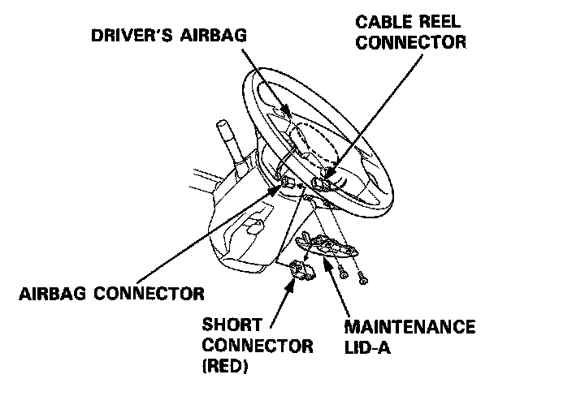
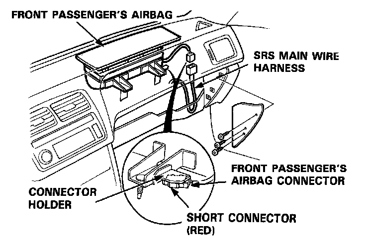

Indicator Light Troubleshooting
SRS Indicator Light Troubleshooting
Possible conditions:
1. SRS light does not come on at all - refer to "Indicator Does Not Light" procedure.
2. SRS light stays on continuously - refer to "Indicator Stays On Continuously" procedure.
3. SRS light comes on in combination with a failure of another electrical system (brake indicator, engine check light etc.). Check for damage/corrosion at the dash fuse box.
NOTE:
- Before starting the applicable troubleshooting, check the condition of all SRS connectors and ground points.
- If the fault is not found after completing the applicable troubleshooting, substitute a known-good SRS unit and check whether the light indication goes away.
CAUTION: Disconnect both the negative and positive battery cables. Connect short connectors to both the driver's airbag and front passenger's airbag connectors.

